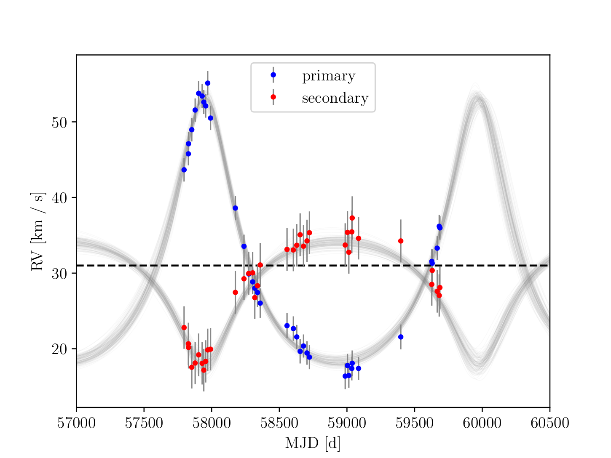
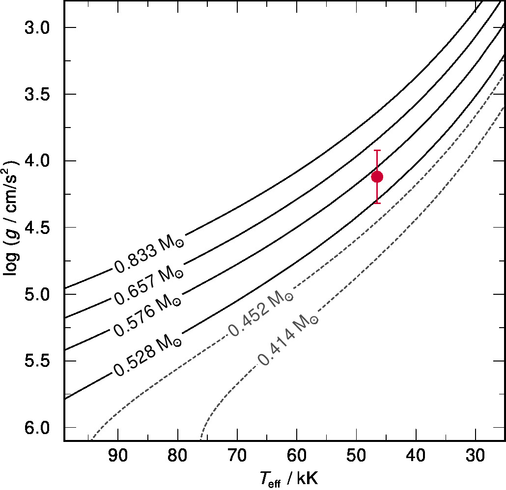

明るさの変化を、二つの星の動きと照らす
惑星状星雲は、進化した星が放出したガスに、残った高温の中心星が光を当ててできる。MPAJ1508-6455では、過去の測光に約12日の変動が報告されていた。Mousleyらは保存されていた測光も調べたうえで、南アフリカ大型望遠鏡（SALT）の高分散分光器HRSを使い、スペクトルに現れる二つの星の吸収線を追った。吸収線の波長のずれから、地球に近づく、あるいは遠ざかる速度を星ごとに測れる。
合成スペクトルとの比較から、一方は高温のO型準矮星（sdO）、もう一方は自転の速いK型巨星と分かった。巨星の速い自転は過去に相手の星から物質や角運動量を受け取った可能性を示す。今回の測定で明らかになったのは現在の軌道と星の性質であり、どのように相互作用してきたかには複数の説明が残る。
5年半で一周する、円から外れた軌道
両星の視線速度の変化を同じ連星軌道モデルで説明すると、公転周期は2,024 ± 22日、離心率は0.38 ± 0.02となった。離心率がゼロなら軌道は円になる。この系では両星の間隔が公転中に大きく変わる。以前に報告された約12日の値は、この分光で測った公転周期とは別に扱う必要がある。


図を選ぶと原寸画像を開けます。
同じ中心星に二つの質量
sdOの温度と表面重力を恒星進化モデルと比較すると、Kiel図からの質量は太陽の0.56 ± 0.08倍になる。一方、視線速度と、連星の軌道面が星雲の形状モデルで推定された傾きに従うという仮定から求めた力学質量は、太陽の1.2 ± 0.2倍だった。軌道の傾きそのものを直接測った値ではなく、著者らによれば、軌道の傾きを推定より小さくすると力学質量はさらに増える。


図を選ぶと原寸画像を開けます。
星雲ガスの元素組成は、かつて外層の底で高温の水素燃焼が起こるほど重い前駆星だったという説明を支持しにくく、Kiel図に基づく値と整合しやすい。二つの質量の食い違いは未解決で、長周期連星の相互作用と星雲の形成史を読み解くうえでも残る問題だ。